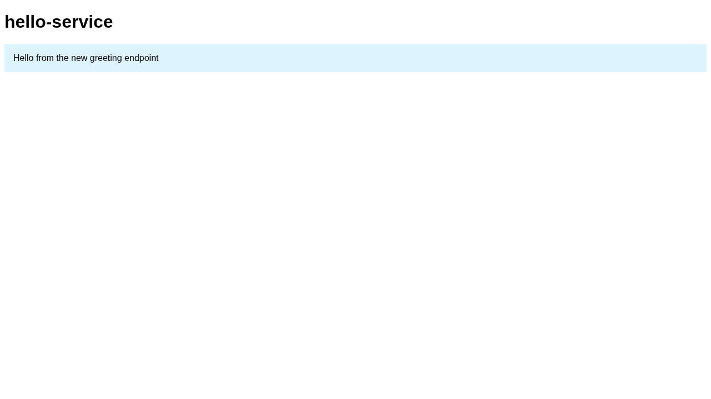

本地运行、未隔离 Commands ran as host child processes without isolation.
本地运行、未隔离 observed The home page renders the new greeting banner, and the service log shows the /api/greeting route being served.
examples/hello-service/server.js:22 — new home bannerexamples/hello-service/server.js:15 — new /api/greeting route
hello-service starting, api key loaded: [REDACTED] listening on 3000 GET /health GET /api/greeting GET /
本地运行、未隔离 inferred Probably not: greeting() is a new pure function only used by the two new code paths. Not exercised at runtime here.
examples/hello-service/server.js:7 — new greeting()No evidence attached (inferred).